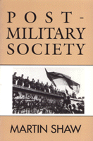

Despite the Gulf War and other regional wars, militarism is in decisive retreat
Despite the Gulf War and other regional wars, militarism is in decisive retreat


 Despite the Gulf War and other regional wars, militarism is in decisive retreat
Despite the Gulf War and other regional wars, militarism is in decisive retreat

|  |
Post-Military SocietyMilitarism, Demilitarization and War at the End of the Twentieth CenturyMartin Shawpaper EAN: 978-0-87722-941-4 (ISBN: 0-87722-941-4) |
With the collapse of the Cold War following the Eastern European revolutions and the ongoing democratization of the Soviet republics, optimism about peace has transformed the international political climate. Incidents such as the Gulf War, however, have tempered this optimism and cast doubts on the prospects for demilitarization. In this book, Martin Shaw examines some of the developments that lie behind the recent momentous changes and argues that, despite the Gulf War and other regional wars, militarism is in decisive retreat.
Writing from a broadly sociological perspective, Shaw examines the roles of war and military institutions in human society and the ways in which preoccupation with war has affected domestic, regional, and international politics in the twentieth century. In doing so, he asks: When does the post-war era end? How have nuclear weapons altered the perception of war by society? What is the relationship between industrialism and militarism?
The author contends that, despite the militarism of some Third World countries, societies in the advanced industrial world (especially in Europe) have been undergoing a profound demilitarization. These societies have become politically insulated from war preparation, have recognized the effect of social movements on inter-state relations, and are experiencing a "revolution of rising expectations."
Offering evidence of "post-military citizenship," Shaw describes the increasing resistance to military conscription throughout the Western world, the replacement of blind obedience with demand for accountability in Eastern bloc countries, and the simultaneous rise of nationalism and communitarianism among common market members. And, in light of the collapse of Stalinist militarism in Europe and the USSR, Shaw suggests some of the changes that face Soviet society.
Preface
Acknowledgements
1. Militarism and Militarization
Disciplinary Approaches •
Definitions •
War and Industrial Society •
Total War and Classical Militarism •
Theory and the End of the Cold War
2. Contests of Military Power
The State System •
International Relations and World Economy •
The 'World Military Order' •
Politics of Military Power •
Military Power as a Means of War
3. Post-Military Society
Variants of the 'Militarization' Thesis •
Sociological Alternatives •
Conscription in Europe •
Limits of Third World Militarism
4. Militarism in Post-Military Society
Comparative Issues in Western Societies •
Militarism and National Myths •
Nostalgia Militarism and Media Wars •
The Military in Post-Military Society •
Post-Militarism in Europe
5. Post-Military Citizenship
Demilitarization in Europe •
Conscription and Citizenship •
The Nation-State and Post-Military Society •
A New World Order? •
The Two Faces of Post-Military Society
6. Postscript: The Gulf War and Post-Military Society
Violence and Post-Military Society •
Post-Military Societies at War •
War and Militarism after the Gulf
Index
Martin Shaw is Senior Lecturer in Sociology at Hull University, U.K., and Director of the Centre for Security Studies. He is the author of Dialectics of War: An Essay on the Social Theory of War and Peace.
© 2015 Temple University. All Rights Reserved. This page: http://www.temple.edu/tempress/titles/946_reg.html.